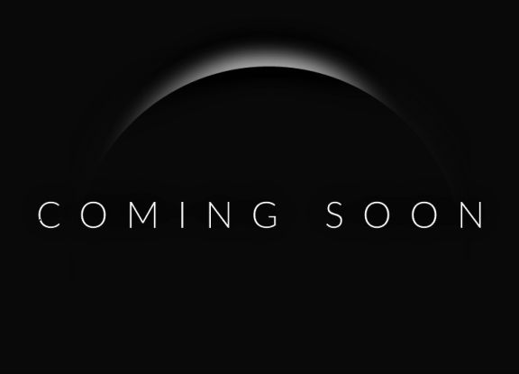

Proyek Saya
Proyek ini adalah sebuah aplikasi web yang dirancang untuk membantu pengguna mengelola tugas harian mereka. Dan saya ingin anda menggunakan jasa saya jika anda mau jika tidak juga gapapaaa hihihihi.
Teknologi yang Digunakan:
- HTML5 untuk struktur konten
- CSS3 & Tailwind CSS untuk desain responsif
- JavaScript (opsional) untuk interaksi pengguna